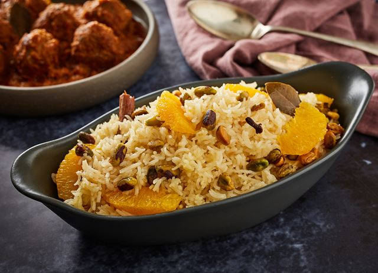

Asma Khan is an Indian-born chef, and cookbook author. She is the owner of Darjeeling Express restaurant in Soho and was profiled on the sixth season of the documentary series Chef's Table. In June 2019 Business Insider named her number 1 on their list of "100 Coolest People in Food and Drink"
Before opening her restaurant, Asma used to organise a supper club in her home in 2012. In 2015, she opened a pop-up in Soho to much acclaim, and Darjeeling Express the restaurant opened its doors in June 2017 in London.
Second daughter fund:
In contrast to boys, who are widely celebrated, and first daughters who are also celebrated but to a lesser extent, second daughters are mourned. To combat this tradition which can have life long effects on these girls, Asma has created a charity which donates them celebration packages.
Recipe: Narangi Pulao 